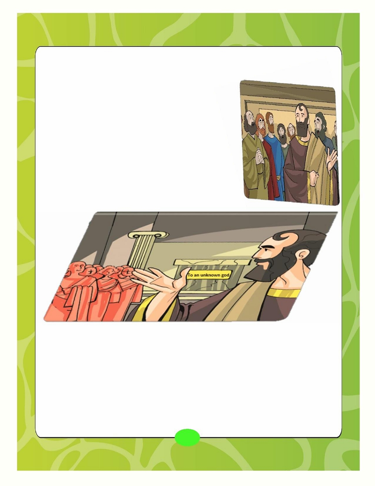

His Holiness Pope Tawadros II
118 Pope of Alexandria and
th
Patriarch of the See of Saint Mark
Page
St Mark's Festival Anthem- Hold fast what you have
2
Hold fast what you have
3
Hold Fast to Your Faith -Saint Athanasius the Apostolic
4
Hold Fast to Your Holy Bible - The Holy Bible
7
Hold Fast to Your Spirituality - Saint Paul and his wisdom in actions
10
Hold Fast to Your Church's Rites - Joseph the Successful Minister
14
Memorization
17
Coptic
18
Hymns & Rituals
29
1
St. Mark's Festival 2015 Anthem
Hold fast what you have,
That no one may take your crown,
Hold fast what you have
What you have hold fast
Grains of Wheat we sure are planted
Here on earth we live and die,
Deep in heart are always chanted,
God's own promises we live by
Grains of Wheat we're humbly waiting
For God's rain to bless our land
We bring fruits as we were told,
Thirty, sixty 'n' a hundred fold
Hold fast what you have,
That no one may take your crown,
Hold fast what you have
What you have hold fast
Grains of Wheat the days are counted,
Here on earth we live and die,
Enemy is growling out your doors,
Give no slumber to your eyes
Narrow is the gate, broken is the road,
Where we're marching carrying a load,
Upwards far above the skies,
Keep your treasure and your heart
Hold fast what you have,
That no one may take your crown,
Hold fast what you have
What you have hold fast
2
What does hold fast mean?
Hold fast means to be tightly attached to something.
The Holy Bible reminds us to "hold fast" many times.
What should we hold fast to?
When a fisherman is fishing on his boat he throws an anchor so his boat
will hold fast to the sand at the bottom of the sea. We as children of
our Lord Jesus Christ look to heaven and throw our anchor.
This anchor is to tightly attach ourselves to our Lord Jesus Christ.
This anchor is our faith, the Holy Bible, the Church, the Sacraments,
our prayers, God's love and love to others.
When we hold fast to our Lord Jesus Christ we will receive our crown in
Heaven that our Lord Jesus Christ promised us!
"Behold, I am coming quickly!
Hold fast what you have,
that no one may take your crown. "
Revelation 3:11
3
Saint Athanasius the Apostolic
In our life, some things are ok to change depending on circumstances; but there are things that
can never change no matter what the circumstances might be, such as faith . Our faith was
handed down to us by our fathers the saints, and can never be changed. We must defend it and
preserve it following the example of St. Athanasius the Apostolic who gave us a great example in
defending the faith.
St. Athanasius is one of the saints of our Orthodox Church. He protected and continued to
defend the faith that we have received from our fathers the Apostles for about half a
century (50 years). This is why our church gives him many titles:
1) Defender of faith, 2) the Apostolic, 3) the 13 th Apostle.
We also call him "Contra Mundum" (Against the World) because he defended the faith
against the whole world. The people used to tell him "the whole world is against you,
Athanasius" and he would reply and say "and I am against the world" ."against the world" here
means against the Arianism which was very widely spread in the whole world at that time.
St. Athanasius was born in Alexandria. His father died when he was very
young and his mother took great care of his education so she enrolled
him in the Theological School of Alexandria. The saint enjoyed his
school and was very successful in it. In his childhood, the Roman Emperor
Diocletian was the ruler of the empire and he was persecuting
Christians everywhere. The saint therefore grew up seeing thousands
of martyrs sacrificing their lives and not giving up their Christ or their faith.
One day Pope Alexandros, the 19 th patriarch, was looking from his
patriarchate's window and he saw a scene he liked very much. He saw
some kids playing on the beach but what drew his attention was a boy
acting like a bishop and baptizing kids in the water and putting his hands
on them and praying for them.
This boy happened to be St. Athanasius. The pope called
St. Athanasius in to him, took him in and cared for him.
4
After a while, with his mother's approval the Pope baptized him.
When he finished his education, he
went to the desert and stayed with
St. Anthony for 3 years and became
his disciple.
The Pope sent for St. Athanasius so he went back to Alexandria
where the pope ordained him a deacon and made him his personal
secretary. St. Athanasius continued studying in the Holy Bible, the
Orthodox doctrine and the teachings of the church fathers.
At that time, there was a man called Arius who was spreading
wrong teachings about Christ's Divinity. He claimed that "the Lord
Jesus Christ is not God" and he denied our faith in the Holy Trinity.
The faith that we received from the fathers of our church is as follows:
- We believe in one God with 3 Hypostases. The Father is God, Our Lord Jesus Christ the Logos
(the Son) is God, and the Holy Spirit is God.
- We declare this every time we make the sign of the cross saying "In the name of the Father, and
the Son, and the Holy Spirit, One God , Amen." We say the name NOT the names, and we say
One God at the end.
Hard to understand? Here are some examples to make it easy:
- The sun has heat that gives us warmth (when we say stand in the sun, we mean to get
some of the heat), and gives light. So we have the sun itself, its heat, and it's light.
We say the sun when we're talking about any of the three. This way we can say that the
sun is three in one, and the three are one.
-In the same manner, in our faith in the Holy Trinity , we say the Father is God, and the
Lord Christ (the Son) is God, and the Holy Spirit is God. The Three are one God
"For there are three that bear witness in heaven: the Father, the
Word, and the Holy Spirit; and these three are one" 1 John 5:7
This is one of the verses St. Athanasius used in
responding to Arius' claims
5
Arius continued with his wrong teachings saying that the Lord
Christ is not God even though Pope Alexandros tried to
convince him more than once that his teachings are wrong.
Arius was spreading his wrong teachings everywhere by making up
easy songs for the people to memorize. For this reason a
council (big meeting) was set up. It was held in the city of
Nicaea in 325 A.D. and was attended by 318 bishops from all
over the world.
Pope Alexandros went to the council and he took with him his
deacon, Athanasius. And despite his young age, St. Athanasius,
was the one to stand up in front of everyone in the council and
defend the faith and prove from the Holy Bible that the Lord
Christ is God and that He took flesh and was born from the Virgin
St. Mary and came into the world. St. Athanasius replied to every
wrong idea that Arius had and the whole council was amazed by
his replies and his defense of the right faith and they called him
"the hero of God's church"
Arius did not repent from his teachings. Therefore the council excommunicated him
(deprived him from the church assembly) and all who believed his teachings. Also, at
that council, St. Athanasius wrote the Orthodox Creed that we still pray today till the
sentence that says "whose kingdom shall have no end" and it states the basic beliefs of
our true Orthodox faith.
After the departure of Pope Alexandros, St. Athanasius was chosen to become the
next pope on the See of St. Mark. He became the 20 th patriarch of Alexandria. And
because he saved the world from Arianism it was said that "if it was not for
Athanasius, the whole world would have become Arian"
6
The Holy Bible is the primary source for all the church's rituals and traditions.
It is in everything we do in our church and is considered one of the most important
sources for the church teaching.
Our Holy Bible is God's message to every one of us. It tells us the story of mankind's
salvation and the life of our Lord Jesus Christ. The Holy Bible is inspired by God. It was
written by a group of "the saints who are directed (inspired) by the Holy Spirt" this is why it is a
book full of truth and nothing in it can be wrong.
"All Scripture is given by inspiration of God, and is profitable for doctrine, for reproof,
for correction, for instruction in righteousness" (2 Timothy 3:16)
Our Holy Bible consist of 73 books:
Old Testament: 39 books
Deuterocanonical Books: 7 books
New Testament: 27 books
The Holy Bible is the main source of all the church's traditions and teaching because Christ
told His disciples ," Go therefore and make disciples of all the nations, baptizing them in the
name of the Father and of the Son and of the Holy Spirit, teaching them to observe all things
that I have commanded you" Matthew 28:19-20.
This verse tells us that our Lord instructed His
disciples (who represent the church) to preach to the
rest of the people and to give them His teachings (which are
found in the Holy Bible).
7
And this is why the church always includes the Holy Bible in all its rituals, dogmas and
traditions:
Abouna prays the litany of the Gospel before the reading
of the Gospel and he raises incense before it.
Abouna raises the "Beshara"
(the Gospel) ( one of the altar vessels
and it contains the 4 Gospels )
and kisses it with all respect
before reading the Gospel.
We light the candles during the reading of the Gospel
The deacon tells us to stand while reading the Gospel
because it is the Word of God
We also find that all prayers in the church include a lot of readings from the Holy
Bible, for example during the liturgy:
1) We read a Psalm and a Gospel during Matins, Vespers
and the Liturgy of the Word
2) After the morning raising of incense (Matins) we pray
the Agpeya which consists of Psalms (from the Old
Testament) and a reading from the Gospel
3) We read a part from the 14 epistles of St. Paul
(the Pauline Epistle)
4) We read a part from the 7 Catholic epistles
(the Catholic Epistle)
5) We read a part from the book of The Acts of the
Apostles (The Praxis)
And there are many other examples where the church's rituals
and prayers are full of readings from the Holy Bible.
This is why we say our Church loves
the Holy Bible so much
and the Church is a
Biblical Church.
8
Activity
Because our church is a biblical church, we read parts of the Holy Bible in the rituals
of every sacrament. Connect the picture to the corresponding reference.
9
Saint Paul and his wisdom in actions
St. Paul was born in Tarsus. He was a Roman whose religion was Judaism.
He had two names: 'Saul' and 'Paul'. He came to Jerusalem when he was a youth to finish
his education and became a disciple to Gamaliel, one of the most famous Jewish
teachers.
In the beginning, St. Paul persecuted the church, the Holy Bible even
tells us that he was guarding the clothes of the people that were
stoning St. Stephen and that he was agreeing with them. In all this
Paul thought he was pleasing God.
Until one day, the Lord Jesus Christ Himself appeared to him when he
was on the way to Damascus (to capture Christians there). He heard
God's voice talking to him and saying " Saul, Saul, why are you
persecuting Me?" Saul answered: "Who are You, Lord?" Then the Lord
said, "I am Jesus, whom you are persecuting"
So Saul asked "Lord, what do You want me to do?"
The Lord told him to go to someone in Damascus named 'Ananias' who will
tell him what to do. St. Paul obeyed and went to Ananias and got
baptized. His whole life changed from that day. After he was a
persecutor of the church he became a great preacher and an apostle
and he wrote us 14 epistles in the New Testament.
10

The Holy Bible tells us many situations where our teacher St. Paul had great wisdom in his
actions and one of them is in Acts 17:22-25:
The story starts in a city called Athens. Athens was full of idols at that
time and St. Paul was very upset when he walked in the city. He
started teaching the people of the city about the Lord Jesus Christ
and His Resurrection. Some philosophers from the city heard St. Paul
talking and they were very amazed from his teachings about this new
God that he was talking about and they wanted to know more. So
they took St. Paul and went to a place called Areopagus (a place
made for discussion and talking about new ideas) and there they
asked him to talk more about the teachings he was saying. St.
Paul was given the wisdom from God to be able to convince the
people by his teachings.
St. Paul noticed that when he walked into the city there was an altar made to "the
unknown god" . So first thing St. Paul did was to act wisely and commend the people
for something good in them: that they are religious and he told them:
"__________________________________________________________________"
(Acts 17:22) (Find the verse and write it)
And here we notice that even though St. Paul was very upset about the idols that were
everywhere in the city, he did not attack the people when he started to speak to them but
praised them for the good things they did.
11
Second thing St. Paul did was to find the right way to address the people to be able to convince
them and told them:
"______________________________________________________________________________
______________________________________________________________________________
______________________________________________________."(Acts 17:23) (Findtheverse)
This verse shows us that St. Paul started to talk about something the people have in front of them
which is the altar with the inscription: TO THE UNKNOWN GOD. He told them I am coming to tell you
about the God that you do not know.
From there he started telling them about God the Creator of heaven and earth and told them:
"______________________________________________________________________________
______________________________________________________________________________
___________________________________________________"(Acts 17:24-25) (Find the verse)
In this verse, St. Paul talked to them about God and how He is the Creator of the whole world. He
explained to them their error in building temples to the idols and that God is the one who gives life
to everyone and that He is near to all of us and by Him we live.
"Though He is not far from each one of us;
for in Him we live and move and have our being."
Acts 17:27-28
Because of the preaching of St. Paul and his wisdom a lot of people believed in Christ and left
the worship of idols.
St. Paul was very wise when he was preaching; he preached to the Jews using verses from the
Holy Bible because they believed in it; but he used the poems, and quotes from
philosophers and scientists because that was what they believed in and knew.
St. Paul teaches us to be wise in our speech and actions, from this story, we learn to:
1- I start with something good to commend the person I talk to.
2- I choose the right time to talk to people and use a speech that matches their
personality.
12
Activity
How would you act with wisdom in each of the following situations?
13
Joseph the Successful Minister-
Genesis 37, 39-41
Joseph the successful minister showed us that organization and
dividing of roles are key to the success of any task.
Joseph lived in the land of Canaan with his father Jacob and his
eleven brothers. His father loved him very much and his brothers
used to call him "the man of dreams" because he used to tell them his
dreams.
Joseph's brothers got so mad at him because of one of the dreams that
he had, they agreed to kill him. However, his brother Reuben
suggested that they throw him in a pit instead. And they did.
A little while later, they saw some Ishmaelite traders; so Judah
suggested selling Joseph to them. They did so and sold him to the
Ishmaelites for twenty pieces of silver. The Ishmaelites took Joseph
with them to Egypt and in turn, they sold him to Potiphar, an officer of
Pharaoh.
Because of Joseph's honesty in his work, God blessed the house of
Potiphar. And Potiphar relied on Joseph for everything.
"The Lord was with Joseph, and he was a successful man."
(Genesis 39:2)
Potiphar's wife liked Joseph and she wanted him to sin with her but he
refused. For this reason, she got so angry and she told lies about
Joseph to Potiphar her husband. He believed her and put Joseph in jail
as a punishment.
14
One day, Pharaoh had two dreams and was very confused.
He brought the wise-men and the magicians to interpret the
dreams for him but they couldn't.
Immediately the chief butler remembered Joseph and how
he interpreted his dream, while they were in prison
together, and he told Pharaoh about him. So they brought
Joseph out of prison and dressed him in very nice clothes
and he stood in front of Pharaoh. Pharaoh told him that he
heard he can interpret dreams and Joseph replied by saying it
is not me, but it is my God's gift.
And Pharaoh began to tell Joseph the dreams he had:
"I was standing on the bank of the river. Suddenly
seven cows came up out of the river, fine looking and fat;
and they fed in the meadow. Then behold, seven other cows
came up after them, poor and very ugly. And the ugly cows
ate up the first seven, the fat cows. And then I woke up.
When I went back to sleep I dreamt again:
seven heads of wheat came up on one stalk, good and full.
Then behold, seven heads, withered, thin, and blighted by
the east wind, sprang up after them. And the thin heads
devoured the seven good heads. I told this to the magicians,
but no one could explain it to me"
Joseph replied to Pharaoh and told him that the two dreams
are actually the same. The seven good cows are seven years,
and the seven good heads are seven years; the dreams are
one. The seven thin and ugly cows which came up after them
are seven years, and the seven empty heads blighted by the
east wind are seven years of famine.
And the repetition of the dreams means that God is telling
him that this is going to happen quickly. He told Pharaoh that
he should choose a discerning and wise man, and set him
over the land of Egypt to collect one-fifth of the produce of
the land of Egypt in the seven plentiful years so the people
can find food in the seven years of famine.
15
Pharaoh and everyone that was standing were amazed with Joseph's wisdom. And Pharaoh said:
"God has told you the meaning of these dreams, I don't think anyone else is as wise as you. I
choose you to be the man to oversee everything here in the land of Egypt." And so
Pharaoh gave Joseph his signet ring and dressed him in the best and most expensive clothes.
He gave Joseph his chariot and named him "Zaphnath-Paaneah" which means "savior of
the world- sustenance of life"
Joseph started working on his plan immediately to be able to save Egypt from the famine.
He chose the right way to accomplish his goal by planning correctly for it:
1) Determining the goal: Joseph's goal was to save Egypt from the 7-year-famine
2) Putting a specific plan with dates to accomplish the goal: Joseph's plan was to:
a. collect one-fifth of the produce of the land in the seven plentiful years
b. appoint officers over the land to oversee the work
c. build stores to keep all the wheat in (Genesis 41:49)
3) Executing the plan and following-up: Joseph started to collect food as fast as he could
during the 7 plentiful years. He gathered so much grain that he couldn't count it, for it
was immeasurable.
4) Evaluating: By the start of the 7-year-famine Joseph's plan proved successful.
The whole world had a very severe famine except Egypt which was full of bread.
Every nation came to Egypt to buy wheat.
Joseph was successful in planning and organizing. We too need to learn organization.
In every task, we need to determine our goal, estimate the time we need,
put a plan and follow it, without forgetting to evaluate our progress.
16
1.
The Gloria
Let us praise with the angels, saying, "Glory to God in the highest, peace on
earth, and good will toward men."
We praise You. We bless You, we serve You, we worship You, we confess to
You, we glorify You, we give thanks to You for Your great glory, O Lord, King of
heaven, God the Father, the Almighty (Pantocrator), O Lord, the one and
only-begotten Son, Jesus Christ, and the Holy Spirit.
O Lord God, Lamb of God, Son of the Father, who takes away the sin of the
world, have mercy on us. O You who takes away the sin of the world, receive
our prayers unto You, who sits at the right hand of His Father, have mercy on
us. You only are the Holy, You only are the Most High, my Lord Jesus Christ,
with the Holy Spirit. Glory be to God the Father. Amen.
Every day I will bless You and praise Your Holy name forever and unto the
ages of ages. Amen.
From the night season my soul awakes early unto You, O my God, for Your
precepts are a light upon the earth. I was meditating on Your ways, for You
have become a helper unto me. In the morning You shall hear my voice. Early I
will stand before You, and You shall see me.
2.
17
Our Lord spent about 4 years in Egypt as a baby.
He spoke to the people in Egypt in their language,
which was the Coptic language at that time.
THE COPTIC ALPHABET
18
19
20
21
22
23
24
25
26
27
28
29
30